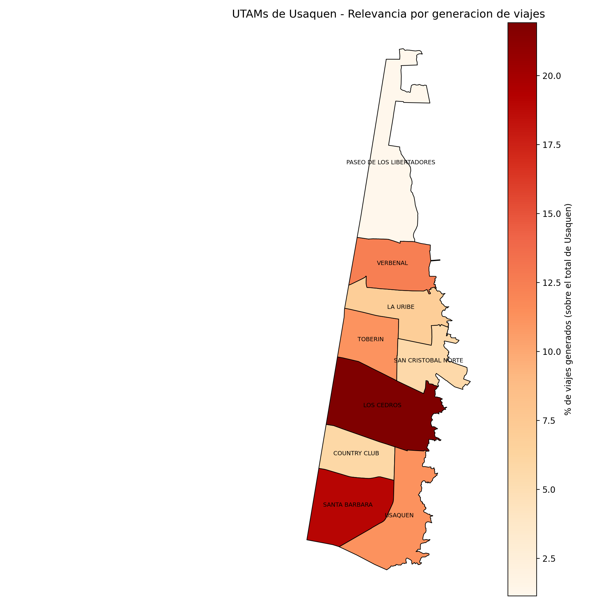
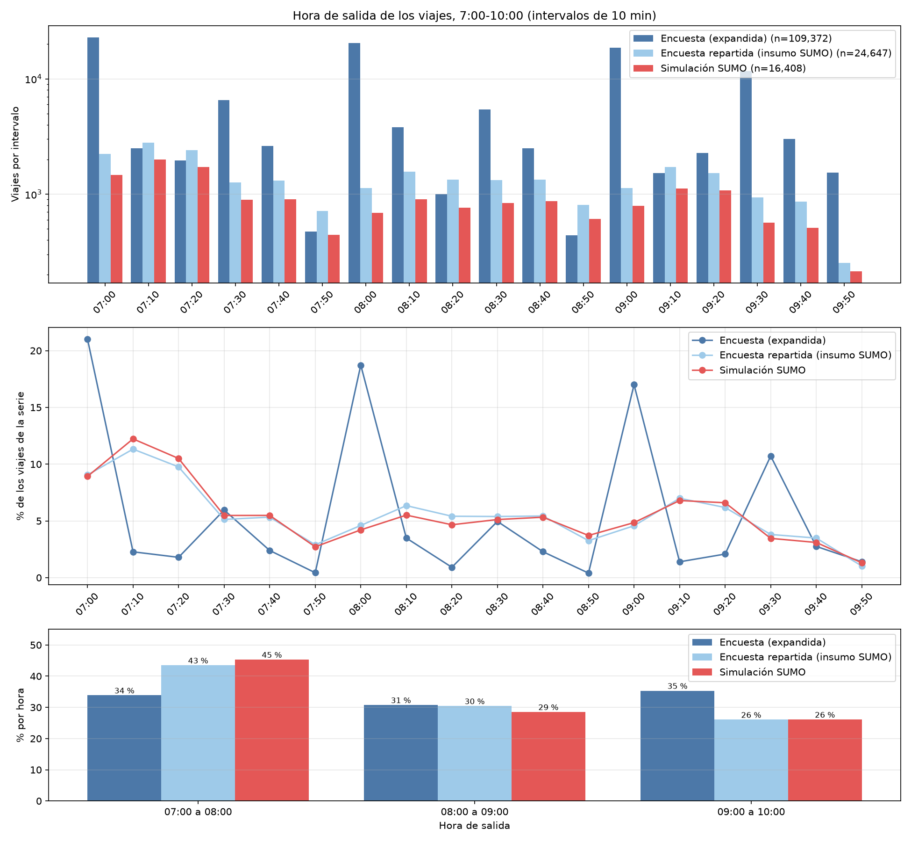

Trabajo de grado · Ingeniería de Sistemas · Pontificia Universidad Javeriana
Pipeline automatizado, visor web y simulador 3D para decisiones de semaforización
Director: Andrés Oswaldo Calderón Romero · Bogotá, 2026
Causas estructurales: una demanda de viajes que crece con la población y el parque automotor, una alta dependencia del vehículo particular y una oferta vial limitada por la topografía y la urbanización histórica.
Quien planifica necesita responder «¿qué pasaría si…?» antes de intervenir una política, una obra o un semáforo.
| Causa | Efecto | Consecuencia |
|---|---|---|
| Barrera de datos. La encuesta de movilidad no viene en un formato que SUMO entienda | Limpiar, expandir y zonificar los viajes a mano | Horas de preparación manual y riesgo de error |
| Barrera técnica. Cada simulación exige varios XML y tres utilidades de línea de comandos | Solo un especialista puede configurar y repetir un escenario | Los escenarios no son reproducibles ni exploran variantes |
| Brecha de decisión. Probar antes de intervenir es lento y poco accesible | Cada escenario nuevo cuesta tanto trabajo como el primero | Intervenciones, como un semáforo, sin evidencia previa |
Objetivo: automatizar la transformación de datos de movilidad de Bogotá en archivos válidos para SUMO, con una interfaz web para visualizar y configurar escenarios. Solo datos públicos y software abierto.
| Enfoque | Resolución | Escenarios hipotéticos | Limitación clave |
|---|---|---|---|
| Modelos analíticos y colas | Macroscópica | Media | Simplificaciones fuertes; cambiar la red obliga a reformular |
| Aprendizaje automático | Según el modelo | Baja | Faltan series históricas; no explora lo que nunca ocurrió |
| APIs de tráfico en vivo | — | Ninguna | Contratos comerciales; solo describen lo que ya pasó |
| Modelo de cuatro pasos | Zonal | Media | Resultados estáticos, sin comportamiento individual |
| Simulación microscópica (SUMO) | Microscópica | Alta | Más pesada (~12 min por corrida); depende de la calidad de los datos |
Trabajos relacionados: MoST (Mónaco) es un escenario único y manual; Foxway visualiza el tráfico histórico de Bogotá sin simular; Semáforos de Barranquilla inspiró la priorización de cruces.
Encuesta de Movilidad 2023, red de OpenStreetMap, siniestros de la SDM, edificios de OSM y Microsoft
SUMO 1.27: netconvert, duarouter, sumo y control en vivo con TraCI
Python 3.11, FastAPI, Pydantic, pyproj y pytest
React, Vite, kepler.gl, three.js y maplibre-gl
pandas, geopandas, osmnx y Jupyter (CRISP-DM)
Código abierto o académico gratuito, sin base de datos ni nube, reproducible
round(fexp_vj) veces (tope 50): 24.647 viajes
Brecha declarada: las 336 estaciones de aforo HMD no traen coordenadas y no pudieron asociarse a la red.
Prioridades de diseño, en orden: reproducibilidad, mantenibilidad, respuesta fluida con un simulador lento, verosimilitud sin sobreprometer y operación local y simple.
Desempeño exigido: pipeline en 4 h como máximo, comparación 3D preparada en 60 s o menos, 30 cuadros por segundo en el visor.
| Decisión | Por qué |
|---|---|
| Tres estilos: tubería ETL, trabajos asíncronos y WebSocket | Capas visor, API, orquestación y dominio; la API responde 202 y el visor consulta cada 2 s |
| Reproducibilidad como requisito | Semilla explícita, orden determinista y huella SHA-256 de los insumos |
| Un trabajador, archivos, sin base de datos | Una corrida pesada a la vez; las salidas de SUMO ya son archivos. Costo: no escala en usuarios |
| Presets por transferencia modal | Conservan total, origen, destino y hora de salida; son deterministas |
| Precalcular y versionar los presets | Una corrida tarda ~12 min y el visor debe mostrar algo al abrir |
| Dos SUMO en lockstep con TraCI | Comparar «sin» y «con» semáforo exige igual demanda y semilla |
| Priorización con reglas | Explicable, reproducible y sin dependencia externa |
fexp, ordenados por hora de salidaduarouter sobre la red 3Dfexp (tope 50) quedan 24.647 en 7:00 a 10:00Cada preset es una regla de transferencia modal que redistribuye los viajes según la probabilidad de cada modo dado el rango de duración, calculada de la encuesta completa.
| Preset | Vehículos | Personas |
|---|---|---|
| Más vehículos | 14.404 | 9.234 |
| Encuesta | 9.592 | 14.123 |
| Más peatones | 6.125 | 17.985 |
| Día sin carro | 4.945 | 19.257 |
Los cuatro presets simulan los mismos 24.647 viajes. Se precalcularon y se versionaron para que el visor abra sin esperar.
Instalar un semáforo reduce los conflictos transversales, pero puede aumentar demoras y colas: por eso se compara antes de decidir.
Viajes animados por modo, panel de demanda, avance real por etapa y cancelación.
Ficha de los 220 semáforos: accesos, volúmenes, fases, edición de programa y método de Webster.
Pantalla dividida «sin» | «con» semáforo, HUD, minimapa y modo manual.
Lo vemos funcionando en el video demo (7 min), al final de la presentación
Una prueba comprueba que el preset encuesta reproduce exactamente la expansión simple de la encuesta.
La integración continua corre las pruebas en cada push (Python 3.12 en Ubuntu, no en Windows). El visor se demostró funcionalmente, sin pruebas automáticas.

La simulación reproduce su insumo (máximo 0,9 puntos de diferencia por intervalo). Los picos en punto de la encuesta son redondeo de los encuestados y se reparten a propósito para que los vehículos no lleguen en ráfagas. Valida la forma de la demanda, no su magnitud.
| Demanda (mañana) | Simulado / aforado | GEH < 5 |
|---|---|---|
| Solo viajes internos | 6 % | 0 de 33 |
| + tráfico de paso | 27 % | 2 de 33 |
| Encuesta completa | 22 % | 2 de 33 |
| + asignación iterativa | 22 % | 2 de 33 |
| Sin control de cruces | 33 % | 2 de 33 |
netconvertNo es que la simulación falle: ejecuta bien la demanda que recibe. El GEH mide la calibración contra la calle, y sin esos datos ningún ajuste la alcanza. Como la misma red y la misma demanda están en los dos escenarios, las comparaciones entre alternativas siguen siendo válidas.
| Objetivo | Estado |
|---|---|
| OE1 · Fuentes de datos | Cumplido |
| OE2 · Pipeline ETL | Cumplido |
| OE3 · Validación en SUMO | Parcial: GEH 2 de 33 (inevitable) |
| OE4 · Módulo web | Cumplido |
| OE5 · Intersecciones y 3D | Cumplido |
netconvert, no los de la SDM.Video demo · 7 minutos